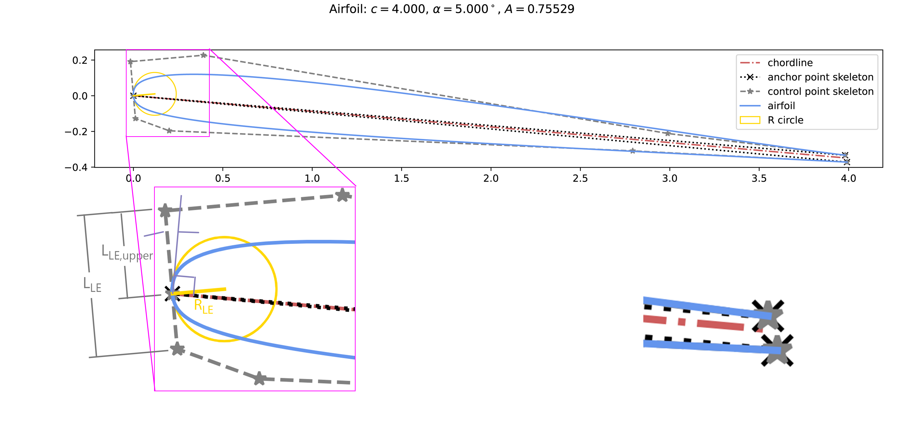

Module pyairpar.core.base_airfoil_params
Expand source code
from pyairpar.core.param import Param
import numpy as np
class BaseAirfoilParams:
def __init__(self,
c: Param = Param(1.0), # chord length
alf: Param = Param(0.0), # angle of attack (rad)
R_le: Param = Param(0.1, 'length'), # leading edge radius
L_le: Param = Param(0.1, 'length'), # leading edge length
r_le: Param = Param(0.5), # leading edge length ratio
phi_le: Param = Param(0.0, active=False), # leading edge 'tilt' angle
psi1_le: Param = Param(0.0), # leading edge upper curvature control angle
psi2_le: Param = Param(0.0), # leading edge lower curvature control angle
L1_te: Param = Param(0.1, 'length'), # trailing edge upper length
L2_te: Param = Param(0.1, 'length'), # trailing edge lower length
theta1_te: Param = Param(np.deg2rad(10.0)), # trailing edge upper angle
theta2_te: Param = Param(np.deg2rad(10.0)), # trailing edge lower angle
t_te: Param = Param(0.0, 'length', active=False), # blunt trailing edge thickness
r_te: Param = Param(0.5, active=False), # blunt trailing edge thickness length ratio
phi_te: Param = Param(0.0, active=False), # blunt trailing edge 'tilt' angle
dx: Param = Param(0.0, active=False), # dx to translate
dy: Param = Param(0.0, active=False), # dy to translate
non_dim_by_chord: bool = True,
):
"""
### Description:
The most fundamental parameters required for the generation of any `pyairpar.core.airfoil.Airfoil`.
A geometric description of an example airfoil generated (from `pyairpar.examples.simple_airfoil.run()`) is
shown below (it may be helpful to open the image in a new tab to adequately view the details):
.. image:: simple_airfoil_annotated.png
### Args:
`c`: ( \\(c\\) ) chord length `pyairpar.core.param.Param`: Default value: `1.0`.
`alf`: ( \\(\\alpha\\) ) angle of attack (rad): `pyairpar.core.param.Param`. Default value: `0.0`.
`R_LE`: ( \\(R_{LE}\\) ) leading-edge radius: `pyairpar.core.param.Param`. Default value: `0.1`.
`L_LE`: ( \\(L_{LE}\\) ) distance between the control points immediately before and after the leading-edge
anchor point: `pyairpar.core.param.Param`. Default value: `0.1`.
`r_LE`: ( \\(r_{LE}\\) ) ratio of the distance from the leading-edge anchor point to the control point before to
the distance between the control points immediately before and after the leading-edge
anchor point ( \\( r_{LE} = L_{LE,upper} / L_{LE} \\) ): `pyairpar.core.param.Param`. Default value: `0.5`.
`phi_LE`: ( \\(\\phi_{LE}\\) ) leading-edge tilt (rad), referenced counter-clockwise from the perpendicular to
the chordline: `pyairpar.core.param.Param`. Valid range: \\( \\phi_{LE} \\in [-180^{\\circ},180^{\\circ}]\\).
Default value: `0.0`.
`psi1_LE`: ( \\(\\psi_{LE,1}\\) ) leading-edge upper curvature control angle (rad), referenced counter-clockwise
from the chordline: `pyairpar.core.param.Param`. Valid range: \\( \\psi_{1,LE} \\in [-90^{\\circ},90^{\\circ}] \\).
Default value: `0.0`.
`psi2_LE`: ( \\(\\psi_{LE,2}\\) ) leading-edge lower curvature control angle (rad), referenced clockwise
from the chordline: `pyairpar.core.param.Param`. Valid range: \\( \\psi_{2,LE} \\in [-90^{\\circ},90^{\\circ}] \\).
Default value: `0.0`.
`L1_TE`: ( \\(L_{TE,1}\\) ) trailing edge upper length: `pyairpar.core.param.Param`. Default value: `0.1`.
`L2_TE`: ( \\(L_{TE,2}\\) ) trailing edge lower length: `pyairpar.core.param.Param`. Default value: `0.1`.
`theta1_TE`: ( \\(\\theta_{TE,1}\\) ) trailing edge upper angle (rad), referenced clockwise from the chordline:
`pyairpar.core.param.Param`. Default value: `np.deg2rad(10.0)`.
`theta2_TE`: ( \\(\\theta_{TE,2}\\) ) trailing edge lower angle (rad), referenced counter-clockwise from the
chordline: `pyairpar.core.param.Param`. Default value: `np.deg2rad(10.0)`.
`t_TE`: ( \\( t_{TE}\\) ) blunt trailing edge thickness: `pyairpar.core.param.Param`. Default value: `0.0`.
`r_TE`: ( \\(r_{TE}\\) ) ratio of the distance from the chordline's endpoint at the trailing edge to the
first control point of the airfoil to the distance between the first and last control points of the airfoil
( \\( r_{TE} = L_{TE,upper} / L_{TE} \\) ): `pyairpar.core.param.Param`. Default value: `0.5`.
`phi_TE`: ( \\( \\phi_{TE}\\) ) blunt trailing-edge tilt (rad), referenced counter-clockwise from the
perpendicular to the chordline (same as `phi_LE`): `pyairpar.core.param.Param`. Default value: `0.0`.
`dx`: ( \\( \\Delta x\\) ) distance to translate the airfoil in the \\(x\\)-direction:
`pyairpar.core.param.Param`. Default value: `0.0`. The translation operation follows the rotation operation
such that the rotation operation can be performed about the origin. Inactive by default.
`dy`: ( \\( \\Delta y\\) ) distance to translate the airfoil in the \\(y\\)-direction:
`pyairpar.core.param.Param`. Default value: `0.0`. The translation operation follows the rotation operation
such that the rotation operation can be performed about the origin. Inactive by default.
`non_dim_by_chord`: a `bool` that determines whether the `pyairpar.core.param.Param`s with `units == length`
should be non-dimensionalized by the chord (`c`). Default value: `True`.
"""
self.c = c
self.alf = alf
self.R_le = R_le
self.L_le = L_le
self.r_le = r_le
if -np.pi <= phi_le.value <= np.pi:
self.phi_le = phi_le
else:
raise ValueError(f'The leading edge tilt angle, phi_le, must be between -180 degrees and 180 degrees,'
f'inclusive. A value of {phi_le.value} was entered.')
if -np.pi / 2 <= psi1_le.value <= np.pi / 2:
self.psi1_le = psi1_le
else:
raise ValueError(f'The upper curvature control arm angle, psi1_le, must be between -90 degrees and '
f'90 degrees, inclusive. A value of {psi1_le.value} was entered.')
if -np.pi / 2 <= psi2_le.value <= np.pi / 2:
self.psi2_le = psi2_le
else:
raise ValueError(f'The lower curvature control arm angle, psi2_le, must be between -90 degrees and '
f'90 degrees, inclusive. A value of {psi2_le.value} was entered.')
self.L1_te = L1_te
self.L2_te = L2_te
self.theta1_te = theta1_te
self.theta2_te = theta2_te
self.t_te = t_te
self.r_te = r_te
self.phi_te = phi_te
self.dx = dx
self.dy = dy
self.non_dim_by_chord = non_dim_by_chord
self.n_overrideable_parameters = self.count_overrideable_variables()
self.scale_vars()
def scale_vars(self):
"""
### Description:
Scales all of the `pyairpar.core.param.Param`s in the `BaseAirfoilParams` with `units == 'length'` by the
`length_scale_dimension`. Scaling only occurs for each parameter if the `pyairpar.core.param.Param` has not yet
been scaled.
"""
if self.non_dim_by_chord: # only scale if the anchor point has a length scale dimension
for param in [var for var in vars(self).values() # For each parameter in the anchor point,
if isinstance(var, Param) and var.units == 'length']:
if param.scale_value is None: # only scale if the parameter has not yet been scaled
param.value = param.value * self.c.value
def count_overrideable_variables(self):
"""
### Description:
Counts all the overrideable `pyairpar.core.param.Param`s in the `BaseAirfoilParams` (criteria:
`pyairpar.core.param.Param().active == True`, `pyairpar.core.param.Param().linked == False`)
### Returns:
Number of overrideable variables (`int`)
"""
n_overrideable_variables = len([var for var in vars(self).values()
if isinstance(var, Param) and var.active and not var.linked])
return n_overrideable_variables
def override(self, parameters: list):
"""
### Description:
Overrides all the `pyairpar.core.param.Param`s in `BaseAirfoilParams` which are active and not linked using a
list of parameters. This list of parameters is likely a subset of parameters passed to either
`pyairpar.core.airfoil.Airfoil` or `pyairpar.core.parametrization.AirfoilParametrization`. This function is
useful whenever iteration over only the relevant parameters is required.
### Args:
`parameters`: a `list` of parameters
"""
override_param_obj_list = [var for var in vars(self).values()
if isinstance(var, Param) and var.active and not var.linked]
if len(parameters) != len(override_param_obj_list):
raise Exception('Number of base airfoil parameters does not match length of input override parameter list')
param_idx = 0
for param in override_param_obj_list:
setattr(param, 'value', parameters[param_idx])
param_idx += 1
self.scale_vars()Classes
class BaseAirfoilParams (c: Param = <pyairpar.core.param.Param object>, alf: Param = <pyairpar.core.param.Param object>, R_le: Param = <pyairpar.core.param.Param object>, L_le: Param = <pyairpar.core.param.Param object>, r_le: Param = <pyairpar.core.param.Param object>, phi_le: Param = <pyairpar.core.param.Param object>, psi1_le: Param = <pyairpar.core.param.Param object>, psi2_le: Param = <pyairpar.core.param.Param object>, L1_te: Param = <pyairpar.core.param.Param object>, L2_te: Param = <pyairpar.core.param.Param object>, theta1_te: Param = <pyairpar.core.param.Param object>, theta2_te: Param = <pyairpar.core.param.Param object>, t_te: Param = <pyairpar.core.param.Param object>, r_te: Param = <pyairpar.core.param.Param object>, phi_te: Param = <pyairpar.core.param.Param object>, dx: Param = <pyairpar.core.param.Param object>, dy: Param = <pyairpar.core.param.Param object>, non_dim_by_chord: bool = True)-
Description:
The most fundamental parameters required for the generation of any
Airfoil. A geometric description of an example airfoil generated (fromrun()) is shown below (it may be helpful to open the image in a new tab to adequately view the details):
Args:
c: ( c ) chord lengthParam: Default value:1.0.alf: ( \alpha ) angle of attack (rad):Param. Default value:0.0.R_LE: ( R_{LE} ) leading-edge radius:Param. Default value:0.1.L_LE: ( L_{LE} ) distance between the control points immediately before and after the leading-edge anchor point:Param. Default value:0.1.r_LE: ( r_{LE} ) ratio of the distance from the leading-edge anchor point to the control point before to the distance between the control points immediately before and after the leading-edge anchor point ( r_{LE} = L_{LE,upper} / L_{LE} ):Param. Default value:0.5.phi_LE: ( \phi_{LE} ) leading-edge tilt (rad), referenced counter-clockwise from the perpendicular to the chordline:Param. Valid range: \phi_{LE} \in [-180^{\circ},180^{\circ}]. Default value:0.0.psi1_LE: ( \psi_{LE,1} ) leading-edge upper curvature control angle (rad), referenced counter-clockwise from the chordline:Param. Valid range: \psi_{1,LE} \in [-90^{\circ},90^{\circ}] . Default value:0.0.psi2_LE: ( \psi_{LE,2} ) leading-edge lower curvature control angle (rad), referenced clockwise from the chordline:Param. Valid range: \psi_{2,LE} \in [-90^{\circ},90^{\circ}] . Default value:0.0.L1_TE: ( L_{TE,1} ) trailing edge upper length:Param. Default value:0.1.L2_TE: ( L_{TE,2} ) trailing edge lower length:Param. Default value:0.1.theta1_TE: ( \theta_{TE,1} ) trailing edge upper angle (rad), referenced clockwise from the chordline:Param. Default value:np.deg2rad(10.0).theta2_TE: ( \theta_{TE,2} ) trailing edge lower angle (rad), referenced counter-clockwise from the chordline:Param. Default value:np.deg2rad(10.0).t_TE: ( t_{TE} ) blunt trailing edge thickness:Param. Default value:0.0.r_TE: ( r_{TE} ) ratio of the distance from the chordline's endpoint at the trailing edge to the first control point of the airfoil to the distance between the first and last control points of the airfoil ( r_{TE} = L_{TE,upper} / L_{TE} ):Param. Default value:0.5.phi_TE: ( \phi_{TE} ) blunt trailing-edge tilt (rad), referenced counter-clockwise from the perpendicular to the chordline (same asphi_LE):Param. Default value:0.0.dx: ( \Delta x ) distance to translate the airfoil in the x-direction:Param. Default value:0.0. The translation operation follows the rotation operation such that the rotation operation can be performed about the origin. Inactive by default.dy: ( \Delta y ) distance to translate the airfoil in the y-direction:Param. Default value:0.0. The translation operation follows the rotation operation such that the rotation operation can be performed about the origin. Inactive by default.non_dim_by_chord: aboolthat determines whether theParams withunits == lengthshould be non-dimensionalized by the chord (c). Default value:True.Expand source code
class BaseAirfoilParams: def __init__(self, c: Param = Param(1.0), # chord length alf: Param = Param(0.0), # angle of attack (rad) R_le: Param = Param(0.1, 'length'), # leading edge radius L_le: Param = Param(0.1, 'length'), # leading edge length r_le: Param = Param(0.5), # leading edge length ratio phi_le: Param = Param(0.0, active=False), # leading edge 'tilt' angle psi1_le: Param = Param(0.0), # leading edge upper curvature control angle psi2_le: Param = Param(0.0), # leading edge lower curvature control angle L1_te: Param = Param(0.1, 'length'), # trailing edge upper length L2_te: Param = Param(0.1, 'length'), # trailing edge lower length theta1_te: Param = Param(np.deg2rad(10.0)), # trailing edge upper angle theta2_te: Param = Param(np.deg2rad(10.0)), # trailing edge lower angle t_te: Param = Param(0.0, 'length', active=False), # blunt trailing edge thickness r_te: Param = Param(0.5, active=False), # blunt trailing edge thickness length ratio phi_te: Param = Param(0.0, active=False), # blunt trailing edge 'tilt' angle dx: Param = Param(0.0, active=False), # dx to translate dy: Param = Param(0.0, active=False), # dy to translate non_dim_by_chord: bool = True, ): """ ### Description: The most fundamental parameters required for the generation of any `pyairpar.core.airfoil.Airfoil`. A geometric description of an example airfoil generated (from `pyairpar.examples.simple_airfoil.run()`) is shown below (it may be helpful to open the image in a new tab to adequately view the details): .. image:: simple_airfoil_annotated.png ### Args: `c`: ( \\(c\\) ) chord length `pyairpar.core.param.Param`: Default value: `1.0`. `alf`: ( \\(\\alpha\\) ) angle of attack (rad): `pyairpar.core.param.Param`. Default value: `0.0`. `R_LE`: ( \\(R_{LE}\\) ) leading-edge radius: `pyairpar.core.param.Param`. Default value: `0.1`. `L_LE`: ( \\(L_{LE}\\) ) distance between the control points immediately before and after the leading-edge anchor point: `pyairpar.core.param.Param`. Default value: `0.1`. `r_LE`: ( \\(r_{LE}\\) ) ratio of the distance from the leading-edge anchor point to the control point before to the distance between the control points immediately before and after the leading-edge anchor point ( \\( r_{LE} = L_{LE,upper} / L_{LE} \\) ): `pyairpar.core.param.Param`. Default value: `0.5`. `phi_LE`: ( \\(\\phi_{LE}\\) ) leading-edge tilt (rad), referenced counter-clockwise from the perpendicular to the chordline: `pyairpar.core.param.Param`. Valid range: \\( \\phi_{LE} \\in [-180^{\\circ},180^{\\circ}]\\). Default value: `0.0`. `psi1_LE`: ( \\(\\psi_{LE,1}\\) ) leading-edge upper curvature control angle (rad), referenced counter-clockwise from the chordline: `pyairpar.core.param.Param`. Valid range: \\( \\psi_{1,LE} \\in [-90^{\\circ},90^{\\circ}] \\). Default value: `0.0`. `psi2_LE`: ( \\(\\psi_{LE,2}\\) ) leading-edge lower curvature control angle (rad), referenced clockwise from the chordline: `pyairpar.core.param.Param`. Valid range: \\( \\psi_{2,LE} \\in [-90^{\\circ},90^{\\circ}] \\). Default value: `0.0`. `L1_TE`: ( \\(L_{TE,1}\\) ) trailing edge upper length: `pyairpar.core.param.Param`. Default value: `0.1`. `L2_TE`: ( \\(L_{TE,2}\\) ) trailing edge lower length: `pyairpar.core.param.Param`. Default value: `0.1`. `theta1_TE`: ( \\(\\theta_{TE,1}\\) ) trailing edge upper angle (rad), referenced clockwise from the chordline: `pyairpar.core.param.Param`. Default value: `np.deg2rad(10.0)`. `theta2_TE`: ( \\(\\theta_{TE,2}\\) ) trailing edge lower angle (rad), referenced counter-clockwise from the chordline: `pyairpar.core.param.Param`. Default value: `np.deg2rad(10.0)`. `t_TE`: ( \\( t_{TE}\\) ) blunt trailing edge thickness: `pyairpar.core.param.Param`. Default value: `0.0`. `r_TE`: ( \\(r_{TE}\\) ) ratio of the distance from the chordline's endpoint at the trailing edge to the first control point of the airfoil to the distance between the first and last control points of the airfoil ( \\( r_{TE} = L_{TE,upper} / L_{TE} \\) ): `pyairpar.core.param.Param`. Default value: `0.5`. `phi_TE`: ( \\( \\phi_{TE}\\) ) blunt trailing-edge tilt (rad), referenced counter-clockwise from the perpendicular to the chordline (same as `phi_LE`): `pyairpar.core.param.Param`. Default value: `0.0`. `dx`: ( \\( \\Delta x\\) ) distance to translate the airfoil in the \\(x\\)-direction: `pyairpar.core.param.Param`. Default value: `0.0`. The translation operation follows the rotation operation such that the rotation operation can be performed about the origin. Inactive by default. `dy`: ( \\( \\Delta y\\) ) distance to translate the airfoil in the \\(y\\)-direction: `pyairpar.core.param.Param`. Default value: `0.0`. The translation operation follows the rotation operation such that the rotation operation can be performed about the origin. Inactive by default. `non_dim_by_chord`: a `bool` that determines whether the `pyairpar.core.param.Param`s with `units == length` should be non-dimensionalized by the chord (`c`). Default value: `True`. """ self.c = c self.alf = alf self.R_le = R_le self.L_le = L_le self.r_le = r_le if -np.pi <= phi_le.value <= np.pi: self.phi_le = phi_le else: raise ValueError(f'The leading edge tilt angle, phi_le, must be between -180 degrees and 180 degrees,' f'inclusive. A value of {phi_le.value} was entered.') if -np.pi / 2 <= psi1_le.value <= np.pi / 2: self.psi1_le = psi1_le else: raise ValueError(f'The upper curvature control arm angle, psi1_le, must be between -90 degrees and ' f'90 degrees, inclusive. A value of {psi1_le.value} was entered.') if -np.pi / 2 <= psi2_le.value <= np.pi / 2: self.psi2_le = psi2_le else: raise ValueError(f'The lower curvature control arm angle, psi2_le, must be between -90 degrees and ' f'90 degrees, inclusive. A value of {psi2_le.value} was entered.') self.L1_te = L1_te self.L2_te = L2_te self.theta1_te = theta1_te self.theta2_te = theta2_te self.t_te = t_te self.r_te = r_te self.phi_te = phi_te self.dx = dx self.dy = dy self.non_dim_by_chord = non_dim_by_chord self.n_overrideable_parameters = self.count_overrideable_variables() self.scale_vars() def scale_vars(self): """ ### Description: Scales all of the `pyairpar.core.param.Param`s in the `BaseAirfoilParams` with `units == 'length'` by the `length_scale_dimension`. Scaling only occurs for each parameter if the `pyairpar.core.param.Param` has not yet been scaled. """ if self.non_dim_by_chord: # only scale if the anchor point has a length scale dimension for param in [var for var in vars(self).values() # For each parameter in the anchor point, if isinstance(var, Param) and var.units == 'length']: if param.scale_value is None: # only scale if the parameter has not yet been scaled param.value = param.value * self.c.value def count_overrideable_variables(self): """ ### Description: Counts all the overrideable `pyairpar.core.param.Param`s in the `BaseAirfoilParams` (criteria: `pyairpar.core.param.Param().active == True`, `pyairpar.core.param.Param().linked == False`) ### Returns: Number of overrideable variables (`int`) """ n_overrideable_variables = len([var for var in vars(self).values() if isinstance(var, Param) and var.active and not var.linked]) return n_overrideable_variables def override(self, parameters: list): """ ### Description: Overrides all the `pyairpar.core.param.Param`s in `BaseAirfoilParams` which are active and not linked using a list of parameters. This list of parameters is likely a subset of parameters passed to either `pyairpar.core.airfoil.Airfoil` or `pyairpar.core.parametrization.AirfoilParametrization`. This function is useful whenever iteration over only the relevant parameters is required. ### Args: `parameters`: a `list` of parameters """ override_param_obj_list = [var for var in vars(self).values() if isinstance(var, Param) and var.active and not var.linked] if len(parameters) != len(override_param_obj_list): raise Exception('Number of base airfoil parameters does not match length of input override parameter list') param_idx = 0 for param in override_param_obj_list: setattr(param, 'value', parameters[param_idx]) param_idx += 1 self.scale_vars()Methods
def count_overrideable_variables(self)-
Description:
Counts all the overrideable
Params in theBaseAirfoilParams(criteria:pyairpar.core.param.Param().active == True,pyairpar.core.param.Param().linked == False)Returns:
Number of overrideable variables (
int)Expand source code
def count_overrideable_variables(self): """ ### Description: Counts all the overrideable `pyairpar.core.param.Param`s in the `BaseAirfoilParams` (criteria: `pyairpar.core.param.Param().active == True`, `pyairpar.core.param.Param().linked == False`) ### Returns: Number of overrideable variables (`int`) """ n_overrideable_variables = len([var for var in vars(self).values() if isinstance(var, Param) and var.active and not var.linked]) return n_overrideable_variables def override(self, parameters: list)-
Description:
Overrides all the
Params inBaseAirfoilParamswhich are active and not linked using a list of parameters. This list of parameters is likely a subset of parameters passed to eitherAirfoilorAirfoilParametrization. This function is useful whenever iteration over only the relevant parameters is required.Args:
parameters: alistof parametersExpand source code
def override(self, parameters: list): """ ### Description: Overrides all the `pyairpar.core.param.Param`s in `BaseAirfoilParams` which are active and not linked using a list of parameters. This list of parameters is likely a subset of parameters passed to either `pyairpar.core.airfoil.Airfoil` or `pyairpar.core.parametrization.AirfoilParametrization`. This function is useful whenever iteration over only the relevant parameters is required. ### Args: `parameters`: a `list` of parameters """ override_param_obj_list = [var for var in vars(self).values() if isinstance(var, Param) and var.active and not var.linked] if len(parameters) != len(override_param_obj_list): raise Exception('Number of base airfoil parameters does not match length of input override parameter list') param_idx = 0 for param in override_param_obj_list: setattr(param, 'value', parameters[param_idx]) param_idx += 1 self.scale_vars() def scale_vars(self)-
Description:
Scales all of the
Params in theBaseAirfoilParamswithunits == 'length'by thelength_scale_dimension. Scaling only occurs for each parameter if theParamhas not yet been scaled.Expand source code
def scale_vars(self): """ ### Description: Scales all of the `pyairpar.core.param.Param`s in the `BaseAirfoilParams` with `units == 'length'` by the `length_scale_dimension`. Scaling only occurs for each parameter if the `pyairpar.core.param.Param` has not yet been scaled. """ if self.non_dim_by_chord: # only scale if the anchor point has a length scale dimension for param in [var for var in vars(self).values() # For each parameter in the anchor point, if isinstance(var, Param) and var.units == 'length']: if param.scale_value is None: # only scale if the parameter has not yet been scaled param.value = param.value * self.c.value